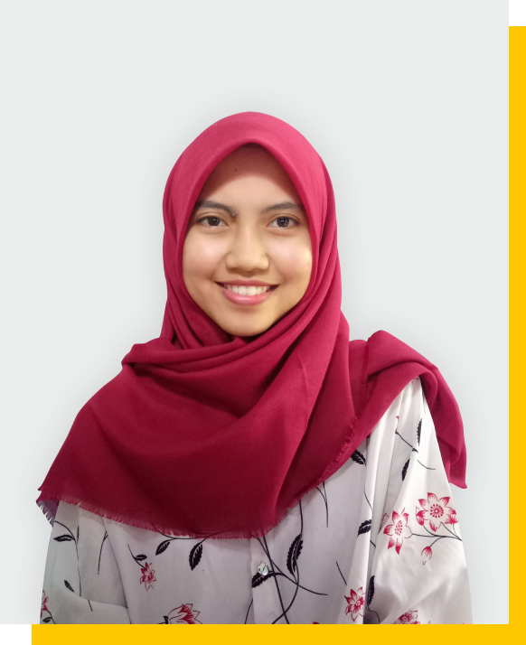
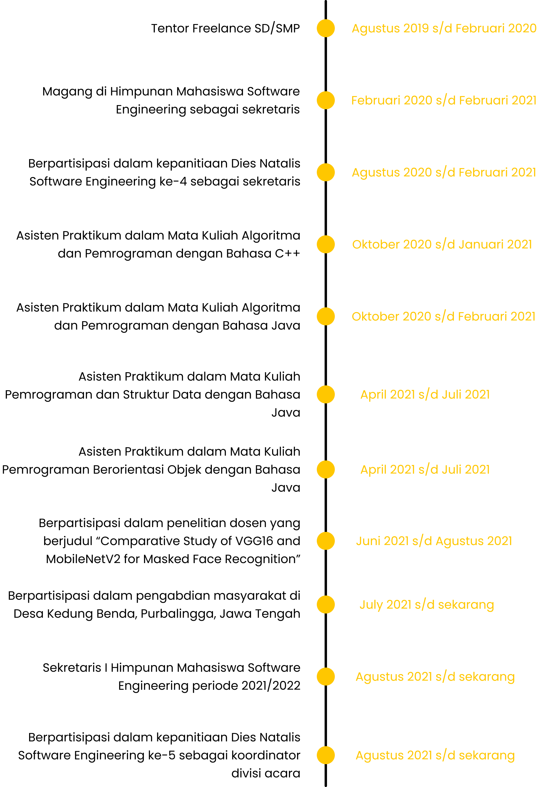

GRACIA RIZKA PASFICA
Saya adalah seorang mahasiswa Institut Teknologi Telkom Purwokerto angkatan 2019 dengan Program Studi S1 Rekayasa Perangkat Lunak. Saat ini saya sedang menjalani perkuliahan di semester 5. Lahir pada tanggal 06 Desember 2000 di Purbalingga. Bidang yang saya minati yakni front-end-website dan Artificial Intelligence.

SKILLS
EXPERIENCES
CONTACT ME
 Jl. Trenggono Rt 05/07 Bukateja, Purbalingga
Jl. Trenggono Rt 05/07 Bukateja, Purbalingga  @graciarp_
@graciarp_  081328460758
081328460758
Created by Gracia Rizka Pasfica